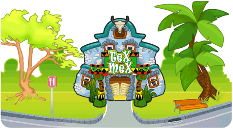

13 |
Mexican Restaurant |
 |

For those who like strong emotions, Mexican food is ideal. In this restaurant, your goal is to prepare exquisite, spicy burritos.
To do so, place the round corn tortilla on the central plate. This serves as the base on which you can add the filling later.
Use the frying pan to fry the meat. When it is done – take care that it doesn't burn! – put it on the corn tortilla.
Meanwhile, you will have to prepare the sauce. Put the tomato sauce, the beans, and the chili in the saucepan and wait until they heat. When the sauce is perfect, pour it on top of the tortilla. The only thing left to do is to roll it up and serve it.
The secret to making a great burrito is in adding just the right amount of chili. Customers can ask for their burritos without any spices, a bit spicy, very spicy, or burning hot. To add chili to the burrito, sprinkle it over a saucepan as many times as the customer wishes. All the burritos you prepare from then on using the sauce from this saucepan will be correspondingly spicy.
The sauce in the saucepan is never used up. If you need to free up one of the saucepans to prepare another type of sauce, select the saucepan by pressing the A Button and swinging your Wii Remote. |
 |
 |
 |